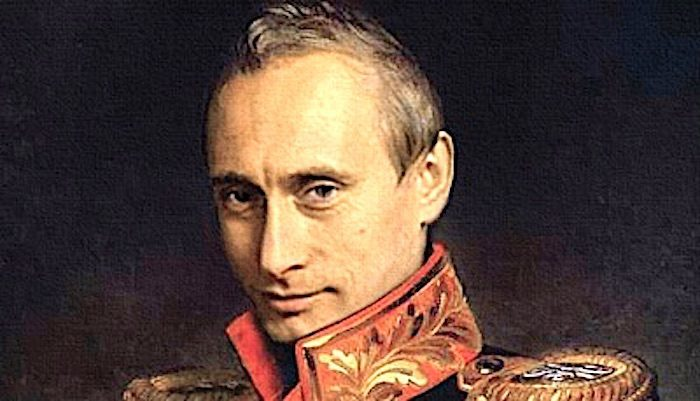

What the Coming Decade Means for Russia and the World in Accordance with Czar Putin’s Policies

Thus far, 2020 started with Russian President Vladimir Putin announcing proposed changes to the constitution.The vote on the changes is expected to take place prior to May 1, 2020 (full list of changes available here).However, an interesting part about the so called proposed vote is the delivery model by the designated Kremlin working group and how it will be presented domestically and verbatim used on the ballot.
It will be drafted as amendments to the Russian constitution.Vladimir Putin stated he will only sign the amendments into law if the Russian populous casts a positive vote.The voting in Russia is another story within itself, as well as the reliability of it.
Overall, it is expected, that the draft amendments will come into force in two blocks:
1) Purely procedural based on the Russian Constitution Amendment, which will be approved before the vote.
2) Amendments themselves will come into full effect after the vote itself.
The whole scenario will be executed very quickly by the Kremlin.The public vote is a formality at this time.The law on the 'Constitutional Assembly' has been adopted already.It would have been created and drafted into the Russian Constitution, which would include amendments to the first and second chapters, by also including proposals on the priority of the Constitution over international acts and norms on the minimum wage and indexation of pensions and benefits.Normally, it would have been held as a referendum in the fall and that would have been a proper mandate under current Russian legislation procedures.Therefore, a referendum could be held to approve the relevant amendments.According to Russian boards, Putin is not satisfied with the pace and wants the vote to be held next month on an urgent basis.
This leads to the question: 'What will this decade bring from Russia and West?'It is plausible to expect the system of governance will be tailored even more to accommodate Putin’s agenda and aspirations.It would give additional powers to the president.It could also give Putin an indefinite rule, without publicly acknowledging such.The President of China Xi Jinping announced publicly his indefinite rule.At most, in 2024 Russia’s will get a bobblehead president, the same way it played out earlier with Medvedev and Putin’s musical chairs.The biggest change, which is very important to point out, is the strengthening and creation of the State Council.At the same time more legislative changes are expected before the presidential election farce in Russia in 2024.
Reading carefully, there is also a peculiar change but an important one: changes of the territories within Russia.It will create federal territories that will be controlled at the central level, which would mean a very odd predicament for the regional governors or elimination of that role period.It would mean the majority of the region will gain more of an autonomy statuses.
This is probably a prelude to amalgamating the Donbas, Luhgansk regions, and possibly inviting other regions within the former Soviet Block nation to join Russia.If the former Soviet block nations do not join volunerally, they will be chipped away at in this manner, without having much of a choice, or loose partial territories within their national boundaries.This is another reason why the Kremlin has been focusing on infrastructure expansion in the regions.Northern Russia is expected to have a myriad of projects.
There is also a large possibility many private companies will be amalgamated under Kremlin’s umbrella.
The Russian criminal hierarchy is getting an overhaul as well.The Russian famous 'Thiefs-in-Law' are under attack and law enforcement created very unfavorable conditions and is looking to switch hierarchies.Of course, Russia will be always corrupt, but only the one that benefits Kremlin is acceptable (Details of Russian organized crime and hierarchy within such ranks can be found here).
Noticeable changes in the West:
This decade will bring a lot of changes within Russia and in turn change certain trajectories on the global arena.
Share on Facebook Tweet Follow us
Posted On: 2020-02-12T00:00:00
Posted By: Christina Kitova


Content Date: 2020-02-12
Download Date: 2021-07-09
Document ID: L0C04DTZT